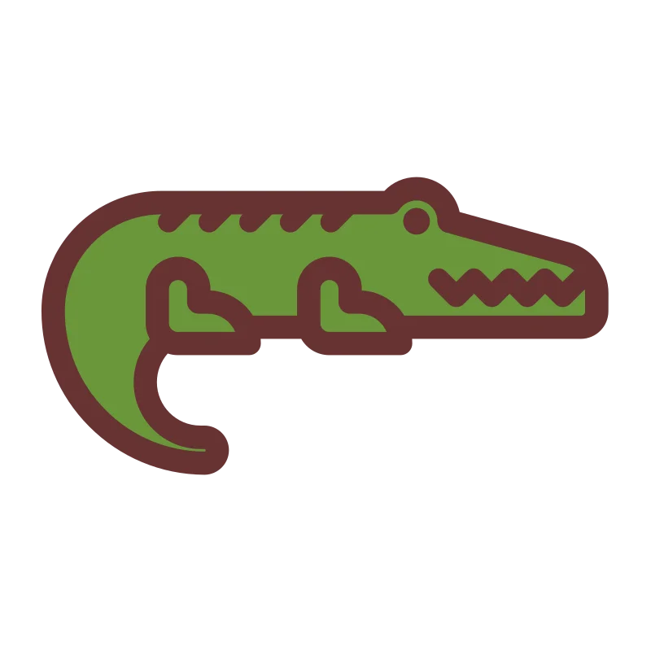
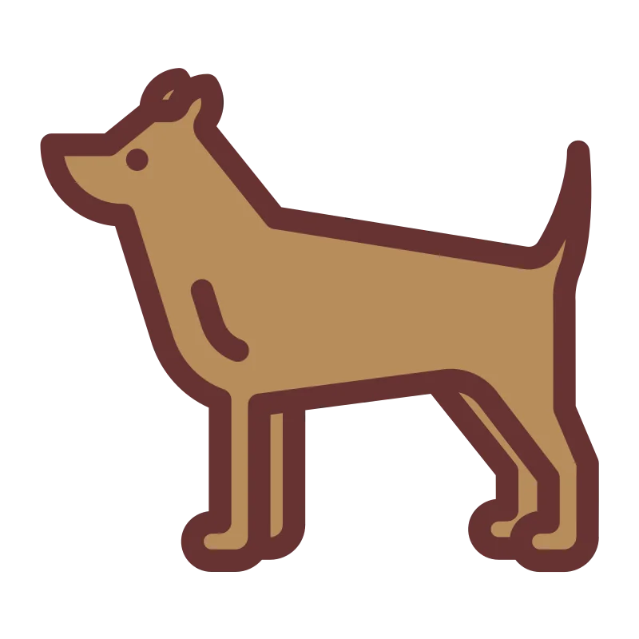
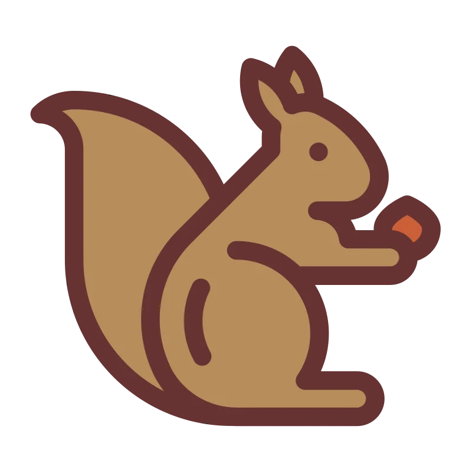

Alpaga
Les alpagas sont des animaux domestiques qui vivent dans les régions montagneuses d'Amérique du Sud. Ils sont généralement inoffensifs pour les humains.
Tout de même, si un alpage vous charge, il est préférable de s'éloigner.
Si vous voulez vous défendre contre un alpaga, commencez par esquiver ses attaques, avancez et placez un upercut bien placé. Les alpagas sont très sensibles aux coups de poing.

Fourmilier
Les fourmiliers sont des animaux sauvages qui vivent en Amérique du Sud. Ils sont généralement inoffensifs pour les humains.
Tout de même, si un fourmilier vous charge, il est préférable de s'éloigner.
Si vous voulez vous défendre contre un fourmilier, allez sur amazon et achetez un déguisement de jaguar ou de puma. Les fourmiliers ont peur des prédateurs.
Chauve-souris
Les chauves-souris sont des animaux nocturnes qui volent et se nourrissent de fruits, de nectar ou d'insectes. Elles sont généralement inoffensives pour les humains.
Cependant, il est important de ne pas les déranger ou de les toucher, car elles peuvent se sentir menacées.
Si vous voulez vous défendre contre une chauve-souris, vous pouvez toujours utiliser un parapluie. Les chauves-souris ont peur des parapluies !
Coléoptère
Les coléoptères sont des insectes qui se caractérisent par leurs élytres rigides et leurs ailes membraneuses. Ils sont généralement inoffensifs pour les humains.
Cependant, certaines espèces de coléoptères peuvent causer des dommages aux cultures ou aux matériaux.
Si vous voulez vous défendre contre un coléoptère, vous pouvez toujours utiliser un insecticide approprié. Assurez-vous de suivre les instructions et de prendre les précautions nécessaires lors de l'utilisation de produits chimiques.
Papillon
Les papillons sont des insectes volants qui se caractérisent par leurs ailes colorées et délicates. Ils sont généralement inoffensifs pour les humains.
Les papillons jouent un rôle important dans la pollinisation des plantes.
Si vous voulez vous défendre contre un papillon, attendez, attendez, attendez... préparez votre main, attendez, attendez, attendez... et... il est parti ! Deviez être plus rapide !
Chameau
Les chameaux sont des animaux domestiques qui vivent principalement dans les régions désertiques. Ils sont connus pour leur capacité à survivre sans eau pendant de longues périodes.
Les chameaux sont généralement dociles envers les humains, mais il est important de faire preuve de prudence lors de leur approche.
Si vous voulez vous défendre contre un chameau, il est préférable de rester lui jeter des cailloux. Les chameaux n'aiment pas les cailloux.
Chat
Les chats sont des animaux domestiques populaires qui sont appréciés pour leur indépendance et leur compagnie. Ils sont généralement inoffensifs pour les humains.
Cependant, il est important de respecter leur espace personnel et de ne pas les provoquer.
Si vous voulez vous défendre contre un chat agressif, il est préférable de reculer très vite et de quitter la zone. Ne tentez pas de l'attraper ou de le caresser, car cela peut augmenter le risque de griffures.
Caméléon
Les caméléons sont des reptiles connus pour leur capacité à changer de couleur. Ils sont généralement inoffensifs pour les humains.
Cependant, il est important de ne pas les manipuler ou de les stresser, car cela peut nuire à leur santé.
Si vous voulez vous défendre contre un caméléon de près, tendez lui un miroir. Les caméléons sont très vaniteux et peuvent passer des heures à se regarder.
Cobra
Les cobras sont des serpents venimeux qui vivent principalement dans les régions tropicales. Ils peuvent être dangereux pour les humains en cas de morsure.
Il est important de rester à distance des cobras et de ne pas les provoquer.
Si vous rencontrez un cobra, si vous êtes déjà hypnotisé, il est trop tard. Si vous ne l'êtes pas, il est préférable de commencer une discussion sur la météo. Les cobras sont très intéressés par la météo.
Crabe
Les crabes sont des crustacés qui vivent principalement dans les zones côtières. Ils sont généralement inoffensifs pour les humains.
Cependant, il est important de ne pas les manipuler ou de les déranger, car ils peuvent pincer avec leurs pinces.
Un crabe vous attaque, AH pas de bol ! Retirez votre doigt de sa pince et partez en courant. Les crabes sont très rapides sur le sable.

Crocodile
Les crocodiles sont de grands reptiles semi-aquatiques qui vivent dans les zones marécageuses et les rivières. Ils peuvent être dangereux pour les humains en cas d'attaque.
Il est important de rester à distance des crocodiles et de ne pas les provoquer.
Un crocodile près de vous ? C'est votre faute ! Arretez d'acheter les T-shirts Lacoste ! Cela ira mieux.

Chien
Les chiens sont des animaux domestiques populaires qui sont appréciés pour leur fidélité et leur compagnie. Ils sont généralement inoffensifs pour les humains.
Cependant, il est important de respecter leur espace personnel et de ne pas les provoquer.
Si vous rencontrez un chien agressif, offrez lui des pâtes à la carbonara. Les chiens adorent les pâtes à la carbonara ou les spaghettis (bolognaise), je ne sais plus.
Canard
Les canards sont des oiseaux aquatiques qui vivent dans les lacs, les étangs et les rivières. Ils sont généralement inoffensifs pour les humains.
Cependant, il est important de ne pas les nourrir avec du pain, car cela peut être nocif pour leur santé.
Si vous voulez vous défendre contre un canard agressif, vous avez une bonbonne de laque ? Non ? Tant pis, vous n'avez pas de défense contre un canard agressif. Vous en avez une ? Parfait, bon appétit !
Éléphant
Les éléphants sont de grands mammifères terrestres connus pour leur taille imposante et leur trompe distinctive. Ils sont généralement pacifiques envers les humains, sauf s'ils se sentent menacés.
Il est important de respecter leur espace et de ne pas les provoquer.
Si vous rencontrez un éléphant sauvage, transformez-vous en souris. Les éléphants ont peur des souris.
Élan
Les élans sont de grands cervidés qui vivent dans les régions boisées. Ils sont généralement inoffensifs pour les humains, mais peuvent devenir agressifs pendant la période de reproduction.
Il est important de rester à distance des élans et de ne pas les provoquer.
Si vous rencontrez un élan agressif, attention à ses bois. Les élans peuvent donner des coups de bois puissants.
Poisson
Les poissons sont des animaux aquatiques qui vivent dans les océans, les rivières et les lacs. Ils sont généralement inoffensifs pour les humains.
Cependant, certaines espèces de poissons peuvent être venimeuses ou avoir des dents tranchantes. Il est important de se renseigner sur les espèces présentes dans la région où vous vous trouvez.
Si vous voulez vous défendre contre un poisson agressif, il est préférable de vous éloigner de l'eau et de demander de l'aide à un professionnel ou à une personne expérimentée.
Grenouille
Les grenouilles sont des amphibiens qui vivent dans les zones humides. Elles sont généralement inoffensives pour les humains.
Cependant, certaines espèces de grenouilles peuvent sécréter des substances toxiques. Il est important de se renseigner sur les espèces présentes dans la région où vous vous trouvez.
Si vous voulez vous défendre contre une grenouille agressive, faites lui un bisou. Si vous avez de la chance, elle se transformera en prince charmant. Si vous n'avez pas de chance, vous aurez un goût de grenouille dans la bouche.
Girafe
Les girafes sont de grands mammifères terrestres connus pour leur long cou et leurs taches distinctives. Elles sont généralement pacifiques envers les humains.
Il est important de respecter leur espace et de ne pas les provoquer.
Si vous rencontrez une girafe, manger les feuilles de l'arbre. Et laissez Darwin se battre contre Lamarck.
Hippopotame
Les hippopotames sont de grands mammifères semi-aquatiques qui vivent dans les rivières et les lacs. Ils peuvent être dangereux pour les humains en cas de confrontation.
Il est important de rester à distance des hippopotames et de ne pas les provoquer.
Un hippopotame se trouve devant vous ? Sortez de l'eau et courez le plus vite possible. Les hippopotames ne sont pas trop rapides sur terre.
Husky
Les huskies sont une race de chiens connue pour leur endurance et leur capacité à supporter les climats froids. Ils sont généralement inoffensifs pour les humains.
Cependant, il est important de respecter leur espace personnel et de ne pas les provoquer.
Si vous rencontrez un husky agressif, il n'est pas un vrai husky. Les huskies sont des chiens très amicaux et sociables. Vérifiez la partie de chien.
Kangourou
Les kangourous sont de grands marsupiaux qui vivent principalement en Australie. Ils sont généralement inoffensifs pour les humains, mais peuvent devenir agressifs en cas de menace.
Il est important de respecter leur espace et de ne pas les provoquer.
Si vous rencontrez un kangourou agressif, Prenez le comme coach et à mon avis une carrière à la WWE vous attend. Les kangourous sont de grands combattants.
Lion
Les lions sont de grands félins connus pour leur crinière distinctive et leur comportement social. Ils peuvent être dangereux pour les humains en cas de confrontation.
Il est important de rester à distance des lions et de ne pas les provoquer.
Si vous rencontrez un lion, C'est le roi, prosternez vous devant lui. Si vous avez de la chance, il vous laissera partir. Si vous n'avez pas de chance, vous serez son prochain repas.
Ara
Les aras sont de magnifiques oiseaux colorés qui vivent dans les forêts tropicales. Ils sont généralement inoffensifs pour les humains.
Cependant, il est important de ne pas les capturer ou les déranger dans leur habitat naturel.
Vous vous faites attaquer par un ara ? Désolé pour vous, vous en verrez de toutes les couleurs. Débrouillez-vous pour vous en sortir.
Lamantin
Les lamantins sont de grands mammifères marins qui vivent dans les eaux côtières et les rivières. Ils sont généralement inoffensifs pour les humains.
Cependant, il est important de ne pas les déranger ou de les nourrir, car cela peut perturber leur comportement naturel.
Désolé, mais si vous vous faites attaquer par un lamantin, vous êtes vraiment malchanceux. Ne jouez pas au loto, vous n'avez pas de chance.
Mianyang
Le Mianyang est un animal mystérieux qui vit dans les montagnes reculées. On sait peu de choses sur cet animal, car il est extrêmement rare et difficile à observer.
Il est important de respecter son habitat et de ne pas perturber son environnement naturel.
Whoa ! Vous avez vu un Mianyang ? Vous êtes vraiment chanceux ! Prenez une photo et partagez-la avec le monde entier. Vous êtes un héros ! Il vous a attaqué ? Direction le loto !!!
Singe
Les singes sont des primates qui vivent dans les forêts et les jungles. Ils sont connus pour leur agilité et leur intelligence.
Cependant, il est important de ne pas les nourrir ou les approcher de trop près, car cela peut perturber leur comportement naturel.
Je ne sais pas vous aider je vous renvoie vers Mowgli. Il a l'habitude des singes. Le livre de la jungle
Souris
Les souris sont de petits rongeurs qui vivent dans divers habitats, y compris les maisons et les champs. Elles sont généralement inoffensives pour les humains.
Cependant, les souris peuvent causer des dommages matériels et propager des maladies. Il est important de prendre des mesures pour les contrôler et les éloigner des zones habitées.
Si vous rencontrez une infestation de souris... Protégez vos cheveux... Un jour les souris et les rats nous contrôleront tous... Pixar nous montre le début dans Ratatouille.
Poulpe
Les poulpes sont des céphalopodes marins connus pour leur intelligence et leur capacité à se camoufler. Ils sont généralement inoffensifs pour les humains.
Cependant, certaines espèces de poulpes peuvent être venimeuses. Il est important de se renseigner sur les espèces présentes dans la région où vous vous trouvez.
Appel aux surfaces rugueuses ! Les poulpes n'aiment pas les surfaces rugueuses. Si vous êtes attaqué par un poulpe, frottez le avec une surface rugueuse. Il partira en courant... enfin en nageant.
Autruche
Les autruches sont de grands oiseaux qui vivent principalement en Afrique. Elles sont généralement inoffensives pour les humains.
Cependant, les autruches peuvent devenir agressives si elles se sentent menacées. Il est important de respecter leur espace et de ne pas les provoquer.
Si vous rencontrez une autruche agressive, offrez lui du sable et elle mettra sa tête dedans. Pas de sable ? Fuyez ! Les autruches sont très rapides.
Hibou
Les hiboux sont des oiseaux nocturnes connus pour leur vision et leur capacité à voler silencieusement. Ils sont généralement inoffensifs pour les humains.
Cependant, il est important de ne pas les déranger pendant leur période de repos diurne.
C'est mort pour vous, ils tournent à 2π... Si vous êtes attaqué par un hibou, il est trop tard. Vous êtes déjà hypnotisé. Vous êtes un hibou maintenant.
Panda
Les pandas sont de grands mammifères herbivores connus pour leur pelage noir et blanc distinctif. Ils sont généralement pacifiques envers les humains.
Il est important de respecter leur espace et de ne pas les provoquer.
Pairi Daiza vous aidera à vous défendre contre un panda.
Pairi Daiza
Pélican
Les pélicans sont de grands oiseaux aquatiques connus pour leur bec en forme de poche. Ils sont généralement inoffensifs pour les humains.
Cependant, il est important de ne pas les nourrir ou les approcher de trop près, car cela peut perturber leur comportement naturel.
Préparez-vous à être attaqué par un pélican. Il vous attaque ? C'est trop tard. Vous êtes déjà dans son bec. Il fallait lancer des poissons pour le distraire.
Manchot
Les manchots sont des oiseaux non volants qui vivent dans l'hémisphère sud. Ils sont connus pour leur apparence unique et leur capacité à nager.
Il est important de respecter leur habitat naturel et de ne pas perturber leurs colonies.
J'avoue, je ne sais pas comment vous défendre contre un manchot. Si vous avez des idées, partagez les avec nous.
Cochon
Les cochons sont des animaux domestiques élevés pour la production de viande. Ils sont généralement dociles et amicaux envers les humains.
Cependant, il est important de leur fournir des soins appropriés et des conditions de vie adéquates pour garantir leur bien-être.
Arh, c'est tellement propre un cochon. Si vous êtes attaqué par un cochon, il est trop tard. Vous êtes déjà couvert de boue. Vous êtes un cochon maintenant.
Raton laveur
Les ratons laveurs sont de petits mammifères connus pour leurs marques faciales distinctives et leurs pattes habiles. Ils sont très adaptables et peuvent être trouvés dans divers habitats.
Il est important d'éviter de nourrir ou de s'approcher des ratons laveurs, car ils peuvent devenir agressifs s'ils se sentent menacés.
Donnez-lui un savon et une éponge. Les ratons laveurs adorent se laver les mains. Si vous êtes attaqué par un raton laveur, il est trop tard. Vous êtes déjà propre.
Rhinocéros
Les rhinocéros sont de grands mammifères herbivores connus pour leurs cornes distinctives. Ils sont des espèces en voie de disparition et nécessitent des efforts de conservation pour protéger leurs populations.
Il est important de soutenir les organisations qui œuvrent pour la conservation des rhinocéros et d'éviter d'acheter des produits fabriqués à partir de cornes de rhinocéros.
S'il vous plaît, on ne prend pas les rhinocéros pour des licornes. Si vous êtes attaqué par un rhinocéros, il est trop tard. Vous êtes déjà en train de courir pour votre vie.
Coq
Les coqs sont des poulets mâles connus pour leur chant et leur plumage coloré. Ils sont couramment trouvés dans les fermes et les zones rurales.
Il est important de fournir aux coqs des soins appropriés et des conditions de vie adéquates, y compris un espace adéquat et un accès à la nourriture et à l'eau.
Si vous envisagez d'élever des coqs, ne jouez pas Rafiki. Si vous êtes attaqué par un coq, c'est que vous avez mal chanté le matin. Recommencez.
Raie des mers
Les raies des mers sont des animaux marins apparentés aux requins. Ils sont connus pour leurs corps plats et leurs longues queues.
Il est important d'observer les raies des mers à distance et d'éviter de les toucher ou de les déranger, car ils peuvent avoir des épines venimeuses.
Rayez les raies des mers de votre liste de choses à faire. Si vous êtes attaqué par une raie des mers... Tant pis pour vous.
Requin
Les requins sont des prédateurs marins connus pour leur appétit vorace et leur silhouette élégante. Ils sont généralement inoffensifs pour les humains, mais certaines espèces peuvent être dangereuses.
Il est important de respecter les règles de sécurité lors de la baignade ou de la plongée dans des zones où les requins sont présents.
Vous entendez ? Vous êtes sûr que vous n'entendez rien ? Mais si vous entendez, c'est le requin qui attaque. Vous êtes mort ? Écoutez ceci pour la prochaine fois !
Paresseux
Les paresseux sont des mammifères arboricoles connus pour leur lenteur et leur mode de vie paisible. Ils sont généralement inoffensifs pour les humains.
Il est important de respecter leur habitat naturel et de ne pas les déranger.
Travaillez, travaillez, travaillez. Si vous êtes attaqué par un paresseux, c'est que vous avez trop travaillé. Reposez vous un peu.
Serpent
Les serpents sont des reptiles qui vivent dans divers habitats à travers le monde. Ils peuvent être venimeux ou non venimeux, il est donc important de se renseigner sur les espèces présentes dans votre région.
Il est important de respecter les serpents et de ne pas les provoquer ou les manipuler.
Si un serpent vous attaque, il y a deux possibilités. Soit, vous êtes déjà mort, soit vous êtes déjà hypnotisé. Si vous n'êtes ni mort, ni hypnotisé, il est préférable de vous éloigner du serpent.
Araignée
Les araignées sont des arachnides qui vivent dans divers habitats à travers le monde. Elles sont généralement inoffensives pour les humains, mais certaines espèces peuvent être venimeuses.
Il est important de respecter les araignées et de ne pas les provoquer ou les manipuler.
Oh, attaqué par une araignée ? Il y a donc un nouveau Spider-Man !

Écureuil
Les écureuils sont de petits rongeurs qui vivent dans les arbres. Ils sont généralement inoffensifs pour les humains.
Il est important de respecter leur habitat naturel et de ne pas les déranger.
Hmmm, un écureuil vous attaque ? C'est que vous avez des noisettes dans les poches. Donnez-lui une noisette et il vous laissera tranquille.
Cygne
Les cygnes sont de grands oiseaux aquatiques connus pour leur grâce et leur beauté. Ils sont généralement inoffensifs pour les humains.
Il est important de respecter leur habitat naturel et de ne pas les déranger.
Offrez-en un à votre belle-mère. Si vous êtes attaqué par un cygne, c'est que vous avez oublié de lui offrir un cygne. Vous êtes mort. C'est tout.
Vache
Les vaches sont des animaux domestiques élevés pour la production de lait et de viande. Elles sont généralement dociles et amicales envers les humains.
Cependant, il est important de leur fournir des soins appropriés et des conditions de vie adéquates pour garantir leur bien-être.
La vache faites gaffe au dome ! Si vous êtes attaqué par une vache, c'est que vous avez oublié de lui donner du foin.
Tigre
Les tigres sont de grands félins connus pour leur puissance et leur beauté. Ils sont des espèces en voie de disparition et nécessitent des efforts de conservation pour protéger leurs populations.
Il est important de soutenir les organisations qui œuvrent pour la conservation des tigres et d'éviter d'acheter des produits fabriqués à partir de parties de tigres.
Si c'est Moloch, Corentin vous aidera, enfin Belzébuth !! Bonne chance si ce n'est pas moloch...
Toucan
Les toucans sont de grands oiseaux colorés connus pour leur bec distinctif. Ils sont généralement inoffensifs pour les humains.
Il est important de respecter leur habitat naturel et de ne pas les déranger.
Un toucan vous attaque ? C'est que vous avez oublié de lui donner une banane. Donnez-lui une banane et il vous laissera tranquille.
Tortue
Les tortues sont des reptiles qui vivent dans les océans, les rivières et les terres. Elles sont généralement inoffensives pour les humains.
Il est important de respecter leur habitat naturel et de ne pas les déranger.
Si vous êtes attaqué par une tortue, c'est que ce n'est pas une tortue. Les tortues sont trop lentes et sages pour vous attaquer.
Baleine
Les baleines sont de grands mammifères marins connus pour leur taille impressionnante. Elles sont généralement inoffensives pour les humains.
Il est important de respecter leur habitat naturel et de ne pas les déranger.
Aspiré par une baleine ? Faites du feu, elle vous recrachera. Vous ne savez pas ? Demandez à Pinocchio.
Lapin Blanc
Les lapins blancs sont de petits mammifères connus pour leur douceur et leur apparence adorable. Ils sont généralement inoffensifs pour les humains.
Il est important de respecter leur habitat naturel et de ne pas les déranger.
Il ne faut pas exagérer, un lapin blanc n'attaque pas. On laisse les lapins blancs tranquilles... Si vous êtes quand même attaqué par un lapin blanc, c'est que vous avez oublié de lui donner une carotte.